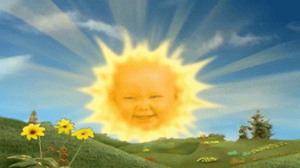
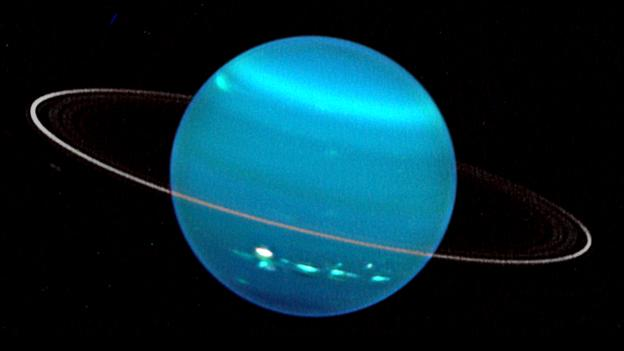
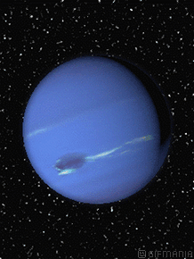

-
Planetas

Sol
Tipo: Estrela de tamanho médio (anã amarela).
Posição: Centro do Sistema Solar.
Características: Fonte de energia e luz para os planetas, composto de hidrogênio e hélio. Gera calor e luz por fusão nuclear, sendo responsável por 99,86% da massa do Sistema Solar.
Mercurio
Menor planeta do Sistema Solar.
Posição: Mais próximo do sol.
Características: Muito quente durante o dia e extremamente frio à noite. Não tem atmosfera densa para reter calor.
Vênus
Similar à Terra em diâmetro.
Posição: Segundo planeta mais próximo do Sol.
Características: Atmosfera densa de dióxido de carbono, o que cria um efeito estufa extremo. É o planeta mais quente do Sistema Solar.
Terra
Quinto maior planeta.
Posição: Terceiro planeta a partir do Sol.
Características: O único planeta conhecido com água líquida e vida. Atmosfera rica em oxigênio.
Marte
Menor que a Terra.
Posição: Quarto planeta.
Características: Conhecido como o "planeta vermelho" devido ao óxido de ferro na sua superfície. Possui calotas polares e vulcões inativos.
Jupiter
O maior planeta do Sistema Solar.
Posição: Quinto a partir do Sol.
Características: Composto principalmente de gás (hidrogênio e hélio). Tem a Grande Mancha Vermelha, uma tempestade gigante.
Saturno
Segundo maior planeta
Sexto planeta.
Características: Famoso por seus anéis de gelo e poeira. Também é um gigante gasoso como Júpiter.Urano
Terceiro maior planeta.
Posição: Sétimo planeta.
Características: Tem um eixo de rotação inclinado, o que faz com que “role” ao orbitar o Sol. É composto principalmente de gelo e gás.Netuno
Similar em tamanho a Urano.
Oitavo e mais distante do Sol.
Características: Um planeta gasoso com ventos extremamente fortes. Tem uma cor azul devido ao metano na sua atmosfera.